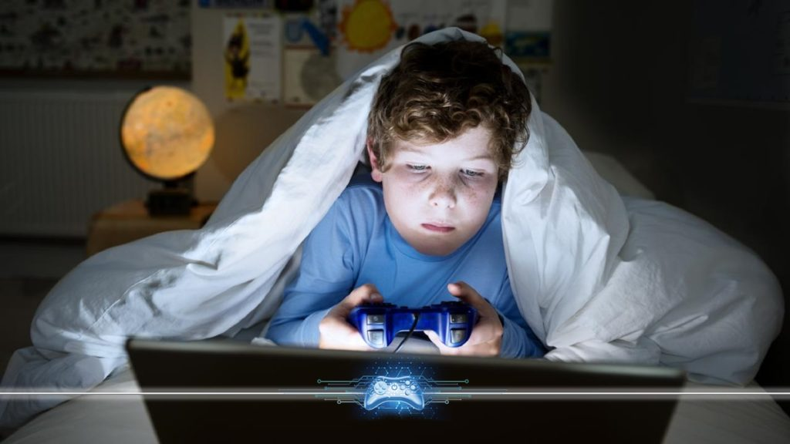
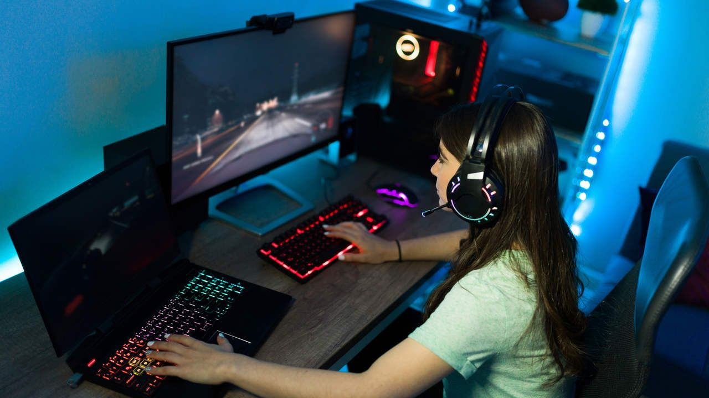
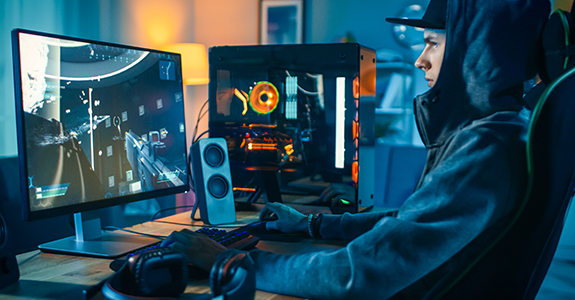

PsicoVerso
person
LOGIN
Por que esse
⠀⠀ tema?
O que é?
Principais Problemas
⠀⠀⠀⠀aos Vícios
Possivéis soluções
Quem Somos
POR QUE ESCOLHEMOS ESSE TEMA?
⠀⠀⠀⠀⠀⠀⠀⠀⠀⠀⠀Escolhemos esse tema pelas seguintes pesquisas e estatísticas:
⠀⠀⠀A pesquisa apresentada pela Gfk mostrou que 38% ( 96 milhões) dos brasileiros jogam vídeo-game diariamente para se entreter. O Brasil lidera o ranking em consumo de jogos eletrônicos na América Latina. E a grande maioria joga em celular. De acordo com a pesquisa, 86% dos entrevistados optam pelos dispositivos mobiles para passar o tempo no decorrer do dia.
Além disso, outras plataformas também aparecem em alta para o público brasileiro, mas ainda atrás dos celulares. A GfK revelou,também, que 74% utiliza o computador para jogar, enquanto 56% possuem o console como preferência para os jogos.
⠀⠀⠀Ademais, segunda pesquisa do Instituto de Psicologia (IP) da Universidade de São Paulo (USP) um de cada 4 jovens apresentam um comportamento exagerado em relação aos jogos, isso significa que 24 mi-lhões de jovens são dependentes da tecnologia
⠀⠀⠀Alguns dados sobre o mercado dos Video-Game vendidos no Brasil:
⠀⠀⠀O PlayStation 5 (PS5) alcançou a marca de 19,3 milhões de unidades vendidas desde seu lançamento(19/09/2020). PlayStation 4 (PS4) chega oficialmente a 117,2 milhões de unidades vendidas. Xbox vendeu 474,992 unidades. Xbox 360 vendeu : 1,616,128 unidades. Xbox One vendeu: 114,831 unidade

O QUE É VICIO EM RELAÇÃO AOS JOGOS?
⠀⠀⠀Em Janeiro de 2022,o vicio em jogos eletrônicos passou a ser considerado pela primeira vez como um distúrbio mental pela organização mundial da saúde(oms).Sob esse contexto, a 11ª Classificação Internacional de Doenças (CID) irá incluir a condição sob o nome de “distúrbio mental”. Essa documentação descreve o problema como padrão de comportamentos frequentes ou persistente do vício em games que resulta em prejuízos significativos no funcionamento pessoal, familiar, social, educacional, ocupacional e em outras áreas importantes da vida da pessoa, em situação mais graves é identificado a preferencia enorme aos jogos a fazer qualquer outro interesse na vida.
⠀⠀⠀A OMS define os sintomas para que o sujeito seja considerada viciada em jogos, eles são:
⠀⠀⠀-Priorizar o videogame a outras atividades sociais ou corriqueiras, como por exemplo: realizar as refeições do dias, tomar banho, sair com amigos, atividades de casa e entre outros.
⠀⠀⠀-Não consegue controlar a frequência, intensidade e o time enquanto fica jogando
⠀⠀⠀-Manter ou aumentar cada vez mais
POSSIVÉIS SOLUÇÕES
⠀⠀⠀De acordo com os especialistas e com a psicóloga Dra Willis não se deve proibir, qualquer faixa etária, de jogar vídeo game, pois apesar de trazer alguns problemas também apresentam vários benefícios. Sob essa expectativa, é aconselhável que os pais ou os usuários tenham cuidados, responsabilidade e controle do tempo sendo investido em frente ás telas.
Desse modo, o ideal é construir um relacionamento saudável jogando e não discriminando o aparelho eletrônico. Não apenas isso, mas garantir tanto para as crianças ou adolescentes contatos com atividades ao ar livre como esportes, ir ao cinema, caminhar, academia ou jogar xadrez.
⠀⠀⠀Em relação aos pais, a psicóloga Willis aconselha que os cuidadores conversem e esclareçam com seus filhos os riscos e prejuízos em relação a saúde; comportamento; vida social. Além disso, estimulá-los a cooperação em ajudar na casa ou ajudar nas lições de casa, se afastando um tempo no mundo dos jogos.
⠀⠀⠀Se essas estratégias, mesmo ponto em prática, não dê o resultado esperado! Então, aconselhamos fazer o teste para verificar que, primeiramente, ter um indicador para detectar possíveis vícios, secundariamente, procurar uma psicóloga para resolver os problemas com tratamentos e ferramentas necessárias e adequadas para que o paciente aprenda a se desenvolver melhor, ampliar e prosseguir com a vida, tornando totalmente independente da tecnologia!
Quiz
Sentido Saúde
Sentido Escolar
Sentido Trabalho
Sentido Saúde
⠀⠀⠀-Dores nas mãos:
Os inúmeros movimentos repetitivos com os dedos, ao longo prazo, podem provocar dores, inflamações dos tecidos periar-ticulares, e em casos greves pode estourar os ligamentos dos tendões.
⠀⠀⠀-Dores nas mãos:
Dor comum caracteriza por jogatinas muito longas onde o jogador permanece na mesma posição, na maioria das vezes, com a postura incorreta. Além disso, a falta de movimentação faz com que os músculos entrem em fadiga e doam.
⠀⠀⠀-Dores nas mãos:
Essa dor é ocasionada pelos vários estímulos, cores e informações exagerados durante o uso exagerado na frente das telas.
⠀⠀⠀-Problema de audição:
Muito jogadores tanto profissionais e amadores costumam usar ,na maioria da vezes, fones de ouvido em um volume muito alto. Essa prática provoca várias consequências e danos ao ouvido interno, por exemplo, a perda de audição, ruído constante, a destruição de células auditivas.
⠀⠀⠀-Síndrome do Olho Sego:
A frequência na frente das telas por horas prejudicam os olhos e a exposição descontrolada poderá ocasionar essa síndrome que desenvolve pela falta de lubrificação dos olhos. Caracterizada pela uma irritação parecida com a conjuntivite, pois os olhos ficam se-cos, vermelhos e inflamados. Os sintomas principais são sensibilidade à luz e o desconforto.
⠀⠀⠀-Alteração do sono:
Jogar durante o período da noite e, principalmente, nas madrugadas encurta e atrasa o sono noturno, pois por causa dos numerosos estímulos nos “games” provoca não só uma menor sonolência antes de ir para a cama mas também a diminuição do sono REM. Essa perturbação do sono gera fadiga, estresse, dores cônicas e ansiedade.
⠀⠀⠀-Vício:
Dependendo do jogo, o individuo fica preso dentro de um ciclo viciante diante nas diversas aventuras, missões, partidas de “Battle Ro-yale”, que, infelizmente, diminui tanto a vida social, familiar, escolar ou até profissional!
⠀⠀⠀-Sedentarismo:
O uso prolongado na frente das telas por vários dias consecutivos apresentam uma associação á diminuição dos níveis de ati-vidade físicas, aumenta da gordura corporal, dores musculares e queixas de cansaço.
⠀⠀⠀-Higiene Pessoal:
Com o objetivo central é o ato de jogar, a pessoa ignora os cuidados com a sua Higiene Pessoal, pois para permanecer mais tempo conquistando seus objetivos dentro do jogo prefere continuar a se alimentar, ir ao banheiro, tomar banho.
Sentido Escolar/Social
⠀⠀⠀Uma pesquisa realizada em 2019 pela a Folha do Litoral News mostra que não apenas os adolescentes e as crianças mas como também os adultos passam, em média, 12-16 horas jogando diariamente e isso implica num comportamento incontrolável e, dependendo no vício, o individuo poderá apresentar um comportamento mais agressivo, intolerante e, possivelmente, ao isolamento social.
⠀⠀⠀Sob esse contexto, a criança ou o adolescente costumam ficar preso dentro no quarto jogando vídeo game. Com isso, essa atitude provoca uma alteração significativa no convívio e interação social/familiar, pois, por causa do vício o sujeito não consegue concentrar em atividades cotidianas e cuidar do seu próprio corpo.
⠀⠀⠀Diante dessa rotina exagerada no mundo dos jogos, é notável que também terá impactos da vida escolar do aluno. Dessa forma, a maioria dos estudantes apresentam um desempenho escolar baixo e ,isso, provoca uma autoestima baixa, depressão, ansiedade e até bullying. Por causa desses motivos, o aluno perde totalmente o interesse de ir a escola.

Sentido Trabalho
⠀⠀⠀De acordo com a pesquisa publicada no Developmental Psychology Journal mostra que, por causa do vício, os adultos são incapazes de conseguir e permanecer em um determinado emprego ,dificuldade de se sustentar financeiramente, completar ensino superior ou técnico, construir uma relação amorosa e familiar, afastam-se tanto do ciclo social e familiar.

Kauã
Agnelo
Programador
Vinicius
Andrade
Programador
Enxadrista
Violista
Rafael
Matias
Programador
Rafael
Teodoro
Fã de Musica
Programador
Principal
Quiz
Rank
Sair